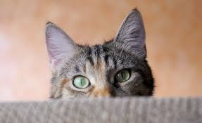
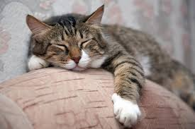
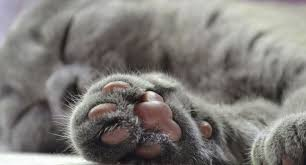
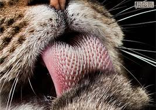

SAIBA MAIS SOBRE OS AMADOS GATINHOS!
- Os gatos têm aproximadamente 32 músculos na orelha externa, o que lhes permite girar as orelhas em até 180 graus.

- Os gatos têm uma visão noturna seis a oito vezes melhor do que a dos humanos.

- Os gatos têm uma audição muito apurada e podem ouvir sons em frequências muito mais altas do que os humanos.
- Os gatos têm 230 ossos no corpo, enquanto os humanos têm 206.

- O ronronar dos gatos não é apenas um som de contentamento. Os gatos também ronronam quando estão com dor ou doentes.

- Os gatos suam pelas almofadas das patas.

- A língua dos gatos é coberta por pequenas protuberâncias chamadas papilas, que ajudam a raspar a carne dos ossos.
